Base Graphics
swirl()
| Welcome to swirl! Please sign in. If you've been here before, use the same name as you
| did then. If you are new, call yourself something unique.
What shall I call you? Krishnakanth Allika
| Please choose a course, or type 0 to exit swirl.
1: R Programming
2: Take me to the swirl course repository!
Selection: 1
| Please choose a lesson, or type 0 to return to course menu.
1: Basic Building Blocks 2: Workspace and Files 3: Sequences of Numbers
4: Vectors 5: Missing Values 6: Subsetting Vectors
7: Matrices and Data Frames 8: Logic 9: Functions
10: lapply and sapply 11: vapply and tapply 12: Looking at Data
13: Simulation 14: Dates and Times 15: Base Graphics
Selection: 15
| | 0%
| One of the greatest strengths of R, relative to other programming languages, is the
| ease with which we can create publication-quality graphics. In this lesson, you'll
| learn about base graphics in R.
...
|== | 2%
| We do not cover the more advanced portions of graphics in R in this lesson. These
| include lattice, ggplot2 and ggvis.
...
|=== | 4%
| There is a school of thought that this approach is backwards, that we should teach
| ggplot2 first. See http://varianceexplained.org/r/teach_ggplot2_to_beginners/ for an
| outline of this view.
...
|===== | 7%
| Load the included data frame cars with data(cars).
data(cars)
| Your dedication is inspiring!
|======= | 9%
| To fix ideas, we will work with simple data frames. Our main goal is to introduce
| various plotting functions and their arguments. All the output would look more
| interesting with larger, more complex data sets.
...
|========= | 11%
| Pull up the help page for cars.
?cars
| All that hard work is paying off!
|========== | 13%
| As you can see in the help page, the cars data set has only two variables: speed and
| stopping distance. Note that the data is from the 1920s.
...
|============ | 15%
| Run head() on the cars data.
head(cars)
speed dist
1 4 2
2 4 10
3 7 4
4 7 22
5 8 16
6 9 10
| You got it right!
|============== | 17%
| Before plotting, it is always a good idea to get a sense of the data. Key R commands
| for doing so include, dim(), names(), head(), tail() and summary().
...
|================ | 20%
| Run the plot() command on the cars data frame.
plot(cars)
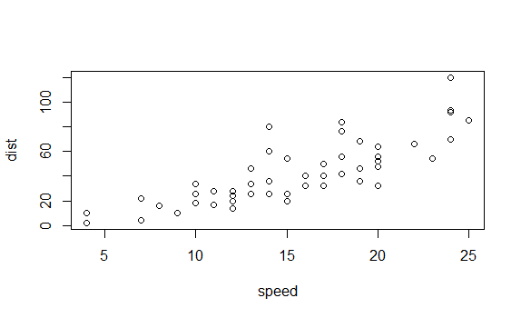
| You are amazing!
|================= | 22%
| As always, R tries very hard to give you something sensible given the information that
| you have provided to it. First, R notes that the data frame you have given it has just
| two columns, so it assumes that you want to plot one column versus the other.
...
|=================== | 24%
| Second, since we do not provide labels for either axis, R uses the names of the
| columns. Third, it creates axis tick marks at nice round numbers and labels them
| accordingly. Fourth, it uses the other defaults supplied in plot().
...
|===================== | 26%
| We will now spend some time exploring plot, but many of the topics covered here will
| apply to most other R graphics functions. Note that 'plot' is short for scatterplot.
...
|======================= | 28%
| Look up the help page for plot().
?plot
| All that hard work is paying off!
|======================== | 30%
| The help page for plot() highlights the different arguments that the function can take.
| The two most important are x and y, the variables that will be plotted. For the next
| set of questions, include the argument names in your answers. That is, do not type
| plot(cars$speed, cars$dist), although that will work. Instead use plot(x = cars$speed,
| y = cars$dist).
...
|========================== | 33%
| Use plot() command to show speed on the x-axis and dist on the y-axis from the cars
| data frame. Use the form of the plot command in which vectors are explicitly passed in
| as arguments for x and y.
plot(x=cars$speed,y=cars$dist)
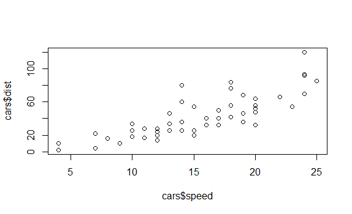
| You got it right!
|============================ | 35%
| Note that this produces a slightly different answer than plot(cars). In this case, R is
| not sure what you want to use as the labels on the axes, so it just uses the arguments
| which you pass in, data frame name and dollar signs included.
...
|============================== | 37%
| Note that there are other ways to call the plot command, i.e., using the "formula"
| interface. For example, we get a similar plot to the above with plot(dist ~ speed,
| cars). However, we will wait till later in the lesson before using the formula
| interface.
...
|=============================== | 39%
| Use plot() command to show dist on the x-axis and speed on the y-axis from the cars
| data frame. This is the opposite of what we did above.
plot(x=cars$dist,y=cars$speed)
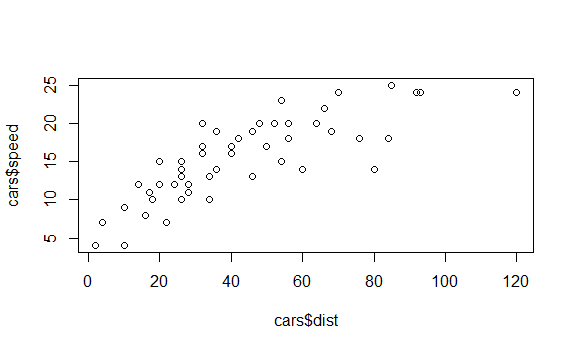
| Nice work!
|================================= | 41%
| It probably makes more sense for speed to go on the x-axis since stopping distance is a
| function of speed more than the other way around. So, for the rest of the questions in
| this portion of the lesson, always assign the arguments accordingly.
...
|=================================== | 43%
| In fact, you can assume that the answers to the next few questions are all of the form
| plot(x = cars$speed, y = cars$dist, ...) but with various arguments used in place of
| the ...
...
|===================================== | 46%
| Recreate the plot with the label of the x-axis set to "Speed".
plot(x=cars$speed,y=cars$dist,xlab="Speed")
')
| Perseverance, that's the answer.
|====================================== | 48%
| Recreate the plot with the label of the y-axis set to "Stopping Distance".
plot(x=cars$speed,y=cars$dist,xlab="Speed",ylab="Stopping Distance")
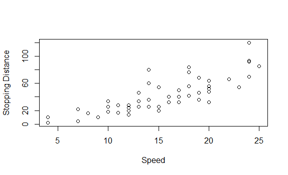')
| One more time. You can do it! Or, type info() for more options.
| Type plot(x = cars$speed, y = cars$dist, ylab = "Stopping Distance") to create the
| plot.
plot(x=cars$speed,y=cars$dist,ylab="Stopping Distance")
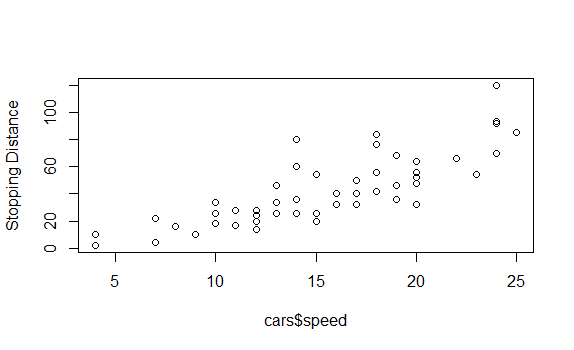')
| You are quite good my friend!
|======================================== | 50%
| Recreate the plot with "Speed" and "Stopping Distance" as axis labels.
plot(x=cars$speed,y=cars$dist,xlab="Speed",ylab="Stopping Distance")
')
| Excellent work!
|========================================== | 52%
| The reason that plots(cars) worked at the beginning of the lesson was that R was smart
| enough to know that the first element (i.e., the first column) in cars should be
| assigned to the x argument and the second element to the y argument. To save on typing,
| the next set of answers will all be of the form, plot(cars, ...) with various arguments
| added.
...
|=========================================== | 54%
| For each question, we will only want one additional argument at a time. Of course, you
| can pass in more than one argument when doing a real project.
...
|============================================= | 57%
| Plot cars with a main title of "My Plot". Note that the argument for the main title is
| "main" not "title".
plot(cars,main="My Plot")
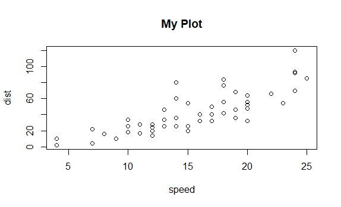')
| Excellent work!
|=============================================== | 59%
| Plot cars with a sub title of "My Plot Subtitle".
plot(cars,sub="My Plot Subtitle")
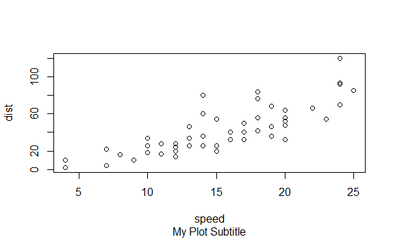')
| You are amazing!
|================================================= | 61%
| The plot help page (?plot) only covers a small number of the many arguments that can be
| passed in to plot() and to other graphical functions. To begin to explore the many
| other options, look at ?par. Let's look at some of the more commonly used ones.
| Continue using plot(cars, ...) as the base answer to these questions.
...
|================================================== | 63%
| Plot cars so that the plotted points are colored red. (Use col = 2 to achieve this
| effect.)
?par
plot(cars,col=2)
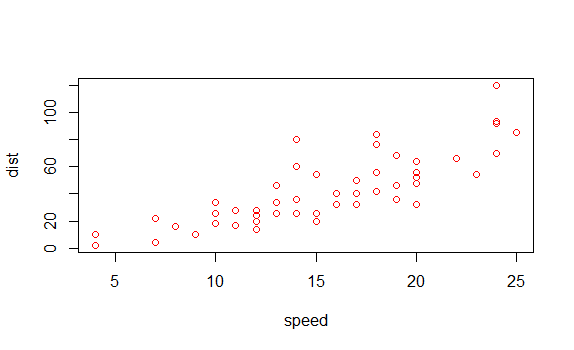
| You are quite good my friend!
|==================================================== | 65%
| Plot cars while limiting the x-axis to 10 through 15. (Use xlim = c(10, 15) to achieve
| this effect.)
plot(cars,xlim=c(10,15))
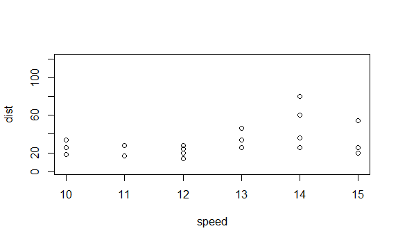
| Nice work!
|====================================================== | 67%
| You can also change the shape of the symbols in the plot. The help page for points
| (?points) provides the details.
...
|======================================================== | 70%
| Plot cars using triangles. (Use pch = 2 to achieve this effect.)
plot(cars,pch=2)
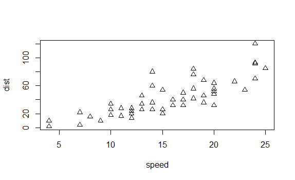
| All that hard work is paying off!
|========================================================= | 72%
| Arguments like "col" and "pch" may not seem very intuitive. And that is because they
| aren't! So, many/most people use more modern packages, like ggplot2, for creating their
| graphics in R.
...
|=========================================================== | 74%
| It is, however, useful to have an introduction to base graphics because many of the
| idioms in lattice and ggplot2 are modeled on them.
...
|============================================================= | 76%
| Let's now look at some other functions in base graphics that may be useful, starting
| with boxplots.
...
|=============================================================== | 78%
| Load the mtcars data frame.
data(mtcars)
| You are quite good my friend!
|================================================================ | 80%
| Anytime that you load up a new data frame, you should explore it before using it. In
| the middle of a swirl lesson, just type play(). This temporarily suspends the lesson
| (without losing the work you have already done) and allows you to issue commands like
| dim(mtcars) and head(mtcars). Once you are done examining the data, just type nxt() and
| the lesson will pick up where it left off.
...
|================================================================== | 83%
| Look up the help page for boxplot().
?boxplot
| Excellent job!
|==================================================================== | 85%
| Instead of adding data columns directly as input arguments, as we did with plot(), it
| is often handy to pass in the entire data frame. This is what the "data" argument in
| boxplot() allows.
...
|====================================================================== | 87%
| boxplot(), like many R functions, also takes a "formula" argument, generally an
| expression with a tilde ("~") which indicates the relationship between the input
| variables. This allows you to enter something like mpg ~ cyl to plot the relationship
| between cyl (number of cylinders) on the x-axis and mpg (miles per gallon) on the
| y-axis.
...
|======================================================================= | 89%
| Use boxplot() with formula = mpg ~ cyl and data = mtcars to create a box plot.
boxplot(formula=mpg~cyl,data=mtcars)
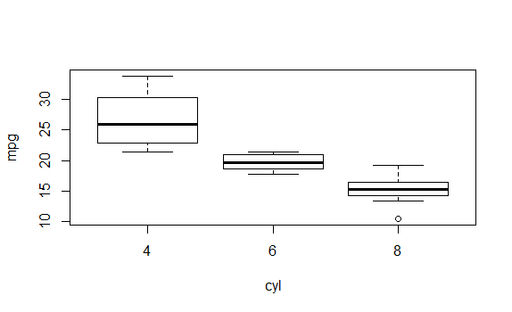
| All that practice is paying off!
|========================================================================= | 91%
| The plot shows that mpg is much lower for cars with more cylinders. Note that we can
| use the same set of arguments that we explored with plot() above to add axis labels,
| titles and so on.
...
|=========================================================================== | 93%
| When looking at a single variable, histograms are a useful tool. hist() is the
| associated R function. Like plot(), hist() is best used by just passing in a single
| vector.
...
|============================================================================= | 96%
| Use hist() with the vector mtcars$mpg to create a histogram.
hist(mtcars$mpg)
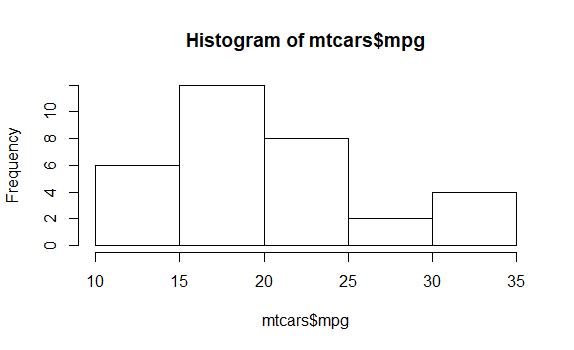
| You are doing so well!
|============================================================================== | 98%
| In this lesson, you learned how to work with base graphics in R. The best place to go
| from here is to study the ggplot2 package. If you want to explore other elements of
| base graphics, then this web page (http://www.ling.upenn.edu/~joseff/rstudy/week4.html)
| provides a useful overview.
...
|================================================================================| 100%
| Would you like to receive credit for completing this course on Coursera.org?
1: No
2: Yes
Selection: 2
What is your email address? xxxxxx@xxxxxxxxxxxx
What is your assignment token? xXxXxxXXxXxxXXXx
Grade submission succeeded!
| You are amazing!
| You've reached the end of this lesson! Returning to the main menu...
| Please choose a course, or type 0 to exit swirl.
1: R Programming
2: Take me to the swirl course repository!
Selection: 0
| Leaving swirl now. Type swirl() to resume.
ls()
[1] "cars" "mtcars"
rm(list=ls())
Last updated 2020-04-20 23:16:24.036922 IST
Comments